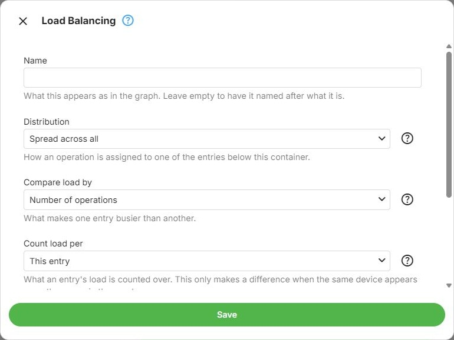
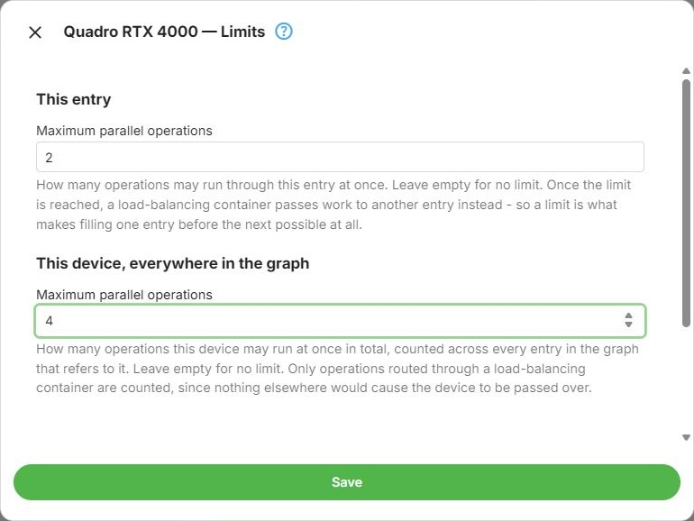

Load Balancing
A Load Balancing Group distributes transcoding work across the nodes it contains, rather than trying them in order until one applies. It is inserted like any other container - see Node Types.
The container itself decides how work is assigned to the nodes below it. The nodes decide how much work they will accept.
Distribution
Overflow uses the nodes in order, each until its own limit is reached, then the next one. The graph draws these as an ordered, left-to-right row, because the order is what determines which node is used first.
Balance uses whichever node is currently least loaded. The graph draws these as an unordered row, since position carries no meaning here.
In the dialog, Fill one, then the next selects Overflow, and Spread across all selects Balance.

Important
Overflow only does something if the nodes have limits. Without a limit a node never becomes full, so nothing ever overflows to the next one - see Limits.
Comparing Load
These two only apply to Balance, since Overflow never compares one node against another.
Compare load by decides what makes one node busier than another:
- Absolute (Number of operations in the dialog) compares the raw number of operations
- Relative (Proportion of its limit) compares each node's share of its own limit, so a node with a smaller limit is not simply favoured for having a smaller number of operations on it
Count load per decides what a node's load is counted over:
- Local (This entry in the dialog) counts the operations running through that node
- Global (The device behind it) counts the operations running through the device behind it, across the whole graph
The difference between the two only matters when the same device appears more than once in the graph - which Expert Mode allows, and which is one of the reasons this setting exists.
Limits
Each node inside a load-balancing container has its own Limits, reachable from the node's own command menu. Two limits are edited together there, because neither reads sensibly on its own:
This node - how many operations may run through this particular node at once. Leave it empty for no limit. Once the limit is reached, the container passes work to another node instead, which is what makes Overflow possible at all.
This device, everywhere in the graph - how many operations the device behind the node may run at once in total, counted across every node in the graph that refers to it. Leave it empty for no limit.
Only operations routed through a load-balancing container are counted, since nothing elsewhere in the graph would cause a device to be passed over for being busy.

Evaluation Inside a Load Balancing Group
The ordinary top-to-bottom, left-to-right reading order does not apply inside these containers - which node is used is a matter of load rather than of position. This is one of the exceptions noted in Graph Evaluation.
Fallback Points in a Load Balancing Group
Only one node of a load balancing group can be a fallback point, and it has to be the last one. A configuration that breaks this rule cannot be saved - the message names the node to move or to clear.
Example: Overflow from One GPU to Another
Suppose the first GPU should handle up to two simultaneous operations, the second up to three, and additional operations should use software. In Expert Mode:
- Insert a Load Balancing Group and choose Fill one, then the next (Overflow).
- Put the first GPU node on the left and the second on the right. Use two different GPUs, each appearing only once in this example, and leave their conditions empty.
- Open Limits on the first GPU node. Set both This node and This device, everywhere in the graph to 2. Set both limits on the second GPU node to 3.
- Place a Software node after the group, with Fallback point on. Leave the GPU nodes' fallback switches off, then save the configuration.
Overflow group: GPU A (limit 2) -> GPU B (limit 3)
|
Software
Assume both GPUs can handle every operation in this example. Starting with no jobs running, start each new job after the previous one is running, and keep the earlier jobs active: jobs 1 and 2 select GPU A; jobs 3, 4 and 5 select GPU B; job 6 passes over both full GPU nodes and selects Software. Once a job on GPU A finishes, the next new job can select GPU A again. Existing jobs stay where they are running.
In this example, a full GPU node reports GpuLoadAtLocalMaximum in the evaluation log. This is selection
based on current load, before an attempt starts. If a selected GPU attempt fails to start, this example
falls back to Software; Overflow alone does not make the other GPU a retry candidate.